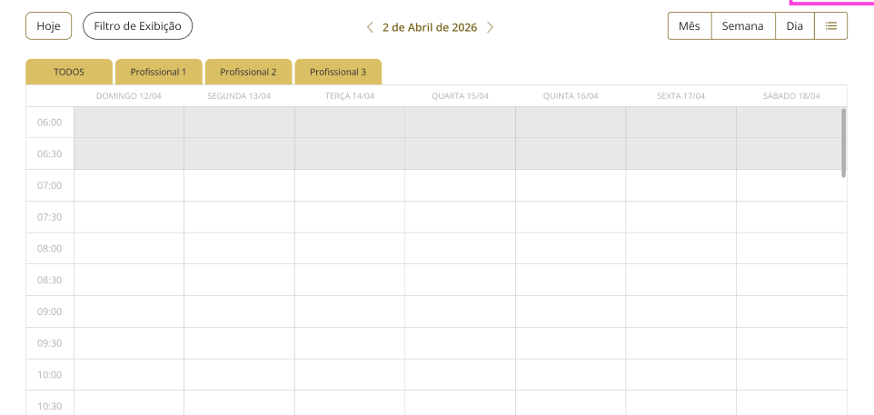
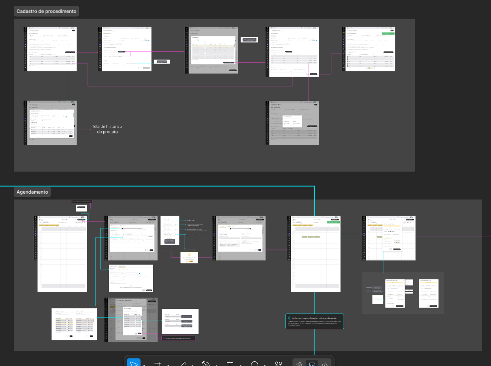
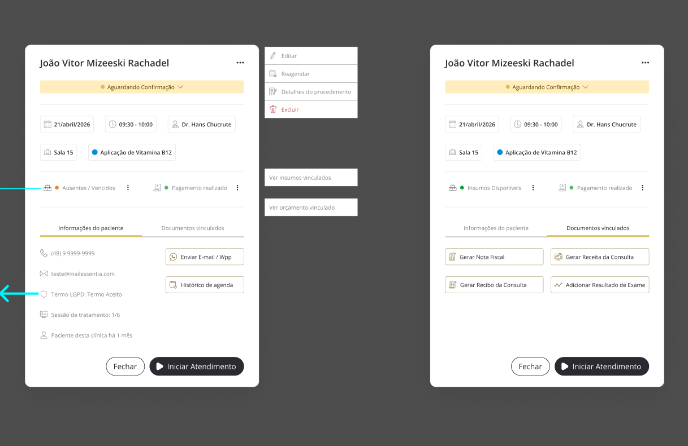

Easy Health: Integração Sistêmica e Automação de Workflows
Redesenhando a arquitetura de uma plataforma healthcare para eliminar falhas operacionais e automatizar o fluxo entre Agenda, Estoque e Financeiro.

O Desafio (The Problem)
Antes da intervenção, a plataforma operava com módulos fragmentados e processos puramente manuais. A falta de comunicação entre os setores de Agenda, Estoque e Financeiro gerava uma alta carga cognitiva para os usuários e prejuízos operacionais reais.
Fragmentação de Dados
Procedimentos, orçamentos e insumos não possuíam vínculo, exigindo preenchimentos repetitivos.
Inconsistência de Estoque
Falta de reserva prévia resultava em cancelamentos de última hora por falta de insumos.
Gargalo Financeiro
A geração de receitas e notas fiscais era um processo manual passível de erros humanos críticos.
A Solução (The Solution)
O projeto consistiu em redesenhar a arquitetura do sistema para criar um Fluxo de Dados Contínuo. A estratégia central foi transformar o "Procedimento" em um Template Inteligente (Blueprint) que dita o comportamento de todos os outros módulos.
1. Procedimento como Template
Estruturei um sistema de cadastro onde o procedimento clínico carrega toda a inteligência do negócio: BOM (Bill of Materials), regras de valores-base e Engine de Repasses para automação de comissões.

Agendamento com Inteligência de Predição
O novo modal de agendamento atua como um assistente de decisão. Ao salvar um agendamento, o sistema valida e "sequestra" itens do estoque em tempo real, além de disparar um rascunho de orçamento vinculado.
Check de Estoque
Validação de disponibilidade no momento exato da marcação da consulta.
Gatilho de Finalização
Automação em cascata: baixa física no estoque e conversão de orçamento em receita no clique final.
UX de Atendimento e Visibilidade
Apliquei heurísticas de Hierarquia Visual e Status Semânticos (Semáforos) para que o profissional saiba a saúde financeira e de estoque de cada consulta diretamente na agenda.

Gestão de Recorrência e Tratamentos
Inspirado em modelos de rastreabilidade de alta performance, implementei a "Linha do Tempo de Tratamento". O sistema identifica sessões fracionadas (ex: 1/6) e sugere o Smart Scheduling para os próximos horários.
O sistema detecta automaticamente se o procedimento exige múltiplas etapas.
Sugestão automática de datas futuras mantendo a herança de dados entre executores.
Resultados Esperados
90%
Redução de erros manuais no preenchimento financeiro e de estoque.
Eficiência
Redução drástica no tempo de checkout e fechamento de conta do paciente.
Ferramentas e Metodologias
UX Research • Service Blueprinting • Atomic Design System • Arquitetura de Dados • Figma (Prototipação)